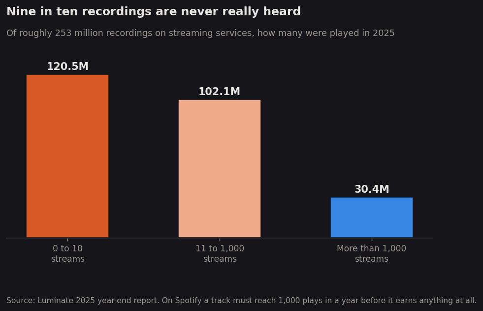

Introduction
Roughly 106,000 new recordings are delivered to streaming services every single day. Almost none of them will ever be heard. This project asks what separates the songs that find an audience from the ones that do not — and whether any part of that answer is audible in the music itself.
Recorded music has never been easier to make or harder to be heard making. In 2025, about 106,000 new tracks were delivered to digital streaming services every day, a seven percent increase on the 99,000 a day of the year before, and those uploads pile onto a catalogue that already holds roughly 253 million recordings. Listeners played 5.1 trillion songs that year, and the industry those plays support grew to $31.7 billion in revenue across 837 million paid subscriptions. Yet the distribution of all that attention is extraordinarily lopsided. Around 88 percent of the recordings on streaming services accumulated a thousand plays or fewer across the whole of 2025, and roughly 120.5 million of them — close to half of everything ever uploaded — were played somewhere between zero and ten times. That threshold is not an arbitrary one, either: a track on Spotify must reach a thousand plays within twelve months before it earns anything at all, so the great majority of released music generates no income for the person who made it. The result is an industry in which abundance and obscurity have grown together, where the barrier to releasing a song has collapsed while the barrier to being noticed has risen. For anyone who writes music, the interesting question is no longer how to get a song out into the world, because that part is now free and instantaneous. The question is what, if anything, distinguishes the small fraction of songs that travel from the overwhelming majority that sit untouched.

While the economics of music were being rearranged, the music itself was quietly changing too, and in ways that can be measured rather than merely asserted. A study of 464,411 recordings released between 1955 and 2010 found three trends running consistently across genres: the range of tones being used narrowed, the paths that melodies take between notes became more constrained, and recordings got louder. The loudness trend is the starkest of the three, rising by roughly a tenth of a decibel every year for half a century while the gap between a song's quietest and loudest moments stayed flat, a pattern that engineers came to call the loudness war. Songs also changed shape. They grew longer through the album era, when a record was something a listener bought once and sat with, and they have been shrinking ever since streaming made the first thirty seconds of a track the part that decides whether it gets played at all. Even the emotional colouring of popular music looks different now than it did in the 1970s, with major keys giving way to minor ones decade after decade. None of these shifts happened by decree. They emerged from millions of individual choices by writers, producers and engineers, each responding to how music was being sold and heard at the time, which makes the accumulated pattern a kind of record of the industry's own history written into the recordings themselves.

Who this matters to depends on where a person stands in the system. For working musicians, the stakes are immediate and financial, because the difference between a song that crosses a listening threshold and one that does not is the difference between a career and a hobby, and the overwhelming majority of releases fall on the wrong side of that line. For listeners, the stakes are subtler but not smaller, since what reaches them is now chosen largely by recommendation systems trained on what people already played, which tends to reinforce whatever is already working. That feedback loop is the reason the homogenisation question is not merely aesthetic. If the music that gets promoted is the music that resembles what succeeded last year, then the narrowing measured in the recordings and the narrowing produced by the recommendation engine become the same phenomenon observed twice. For the industry, the concern runs the other way: catalogues of older music now compete directly with new releases for the same finite listening hours, and a business that cannot reliably tell which new songs will travel is a business spending money largely on guesses. And for the charts that have served as the public scoreboard of popular music since 1958, the ground has shifted underneath, because a measure built for an era of radio play and physical sales now counts streams from a catalogue thousands of times larger than the one it was designed for. Everyone in the chain is making decisions about which music deserves attention, and almost none of them can explain what they are actually selecting for.
The question is not a new one, and its history is mostly a history of disappointment. The idea that a song's commercial fate could be read off its acoustic properties acquired a name, hit song science, and a small industry of companies promising to do exactly that. When researchers tested the premise carefully in 2008, they concluded that the audio features then available carried real but modest information about popularity, and that the confident claims being made for the field were not supported — a paper whose title, Hit Song Science Is Not Yet a Science, has aged into the standard caution for anyone approaching this problem. What has changed since is the raw material rather than the ambition. Where earlier work leaned on a few thousand recordings and hand-built acoustic measures, the qualities of tens of thousands of songs are now catalogued in detail, sixty- eight years of weekly chart history sit in the open, and listeners themselves have annotated artists with millions of words describing how the music feels rather than how it sounds. Those three kinds of evidence — what a song measurably is, how it actually performed, and what people say about it — have rarely been examined together. Doing so makes it possible to separate the parts of success that live inside the recording from the parts that live in timing, reputation and reach, and to be honest about how large each part really is. The most valuable outcome may well be a negative one. Establishing clearly that the audible qualities of a song explain only a small share of its fate would say something worth knowing about how popular music actually works, and about how much of what gets called talent is really distribution.
Ten questions this project sets out to answer
- Can a song's measurable qualities predict whether it becomes popular, or is success driven mostly by forces outside the recording itself?
- Has popular music genuinely become more uniform over the past sixty years, or does each generation simply believe that about the one that follows it?
- Do the genre labels the industry uses correspond to real, audible differences, or are they primarily categories of audience and marketing?
- Why did recordings grow steadily louder for fifty years, and what caused that trend to stall when it did?
- What changed about the way songs are written when streaming replaced radio play and album sales as the main route to a listener?
- Has popular music become less cheerful over time, and if so, was the shift gradual or did it happen at a particular moment?
- Are the songs that reach the charts musically different from the songs that never do, and by how much?
- Which matters more to a song's success: the qualities of the song itself, or the size of the audience its artist had already gathered before releasing it?
- Has reaching the charts become easier or harder, and does arriving there still mean what it meant thirty years ago?
- When listeners describe music in their own words, do they reach for terms that match how it measurably sounds, or for terms about mood, identity and belonging?
Sources referenced above
- Luminate, year-end music report — daily upload volume, catalogue size, and the share of tracks below one thousand streams.
- IFPI, Global Music Report 2026 — global recorded music revenue and subscription figures.
- Spotify, track monetization eligibility — the one thousand stream royalty threshold.
- Serrà J., Corral Á., Boguñá M., Haro M., Arcos J., Measuring the Evolution of Contemporary Western Popular Music, Scientific Reports 2, 521 (2012).
- Pachet F., Roy P., Hit Song Science Is Not Yet a Science, ISMIR 2008.
- Washington Post, Pop songs are getting shorter in the era of streaming and TikTok (2024).